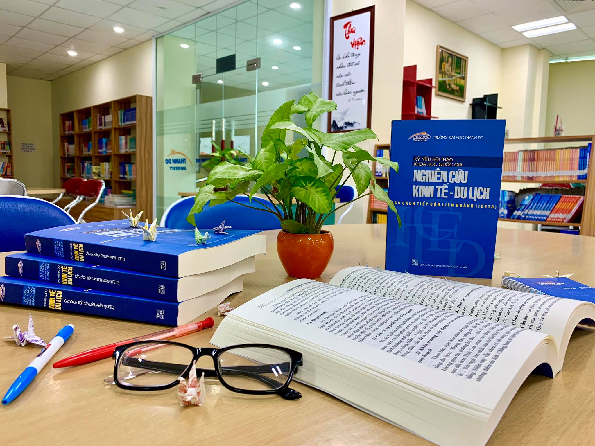

Quản trị Văn phòng
Tổng quan
Quản trị văn phòng là một ngành liên quan đến việc Xây dựng kế hoạch, thiết kế, triển khai thực hiện, theo dõi đánh giá và đảm bảo quá trình làm việc trong một văn phòng của một tổ chức luôn đạt năng suất và hiệu quả. Tại Việt Nam, ngành quản trị văn phòng có từ khá sớm, cung cấp nguồn nhân lực cho các cơ quan nhà nước, các tổ chức chính phủ.
- Mã ngành: 7340406
- Định hướng đào tạo: Hành chính – Văn thư
- Thời gian đào tạo: Tùy thuộc vào đối tượng đầu vào (Trung cấp, Cao đẳng, Đại học)
- Trình độ đào tạo: Cử nhân
- Học phí: 370.000 đồng/1 tín chỉ
Chương trình đào tạo
Giai đoạn 1 (2 năm):
- Sinh viên sẽ học các môn học cơ bản như Nguyên lý quản trị, Kinh tế học, Tổ chức và quản lý văn phòng, Kỹ năng giao tiếp, các môn kỹ năng mềm và tiếng Anh chuyên ngành.
- Sinh viên học các môn chuyên sâu hơn về quản lý hành chính, quản lý tài liệu, sử dụng phần mềm văn phòng, kỹ năng thuyết trình, quản lý thời gian và công việc.
Giai đoạn 2 (2 năm):
- Sinh viên thực hành qua các bài tập nhóm, tham gia các dự án thực tế và các khóa học về tổ chức sự kiện, lập kế hoạch công việc, và quản lý dự án văn phòng. Các học phần chuyên ngành: Văn thư, lưu trữ, soạn thảo văn bản, Quản lý tài liệu điện tử, Quan hệ công chúng…
- Sinh viên hoàn thành khóa luận tốt nghiệp hoặc tham gia thực tập tại các doanh nghiệp, giúp nâng cao kinh nghiệm làm việc thực tế và chuẩn bị cho sự nghiệp trong môi trường văn phòng chuyên nghiệp.

Triển vọng nghề nghiệp
Bộ phận Văn phòng luôn tồn tại và tất yếu cần thiết trong hệ thống các cơ quan nhà nước, từ trung ương đến địa phương. Hàng năm, các cơ quan này đều có nhu cầu tuyển dụng bổ sung các vị trí chuyên viên, nhân viên hành chính, văn phòng, quản lý,… Chỉ tính riêng văn phòng cấp bộ và cấp tỉnh, cấp huyện, hàng năm đều tuyển dụng thêm rất nhiều vị trí có liên quan đến nhân sự ngành Quản trị văn phòng.
Ở Việt Nam hiện nay có hàng ngàn các tổ chức chính trị và tổ chức chính trị – xã hội. Đặc biệt số lượng các tổ chức phi chính phủ, các tổ chức nước ngoài hoạt động ở Việt Nam đang ngày càng tăng. Những tổ chức này đều cần có đội ngũ cán bộ quản lý và nhân viên văn phòng để duy trì và triển khai hoạt động và làm cầu nối trong quan hệ giao tiếp với nhà nước và với các tổ chức khác.
Lý do chính dẫn đến cầu về nhân lực trong lĩnh vực QTVP tăng cao bởi vì Văn phòng là bộ phận không thể thiếu trong tất cả các cơ quan, tổ chức, doanh nghiệp và trường học. Văn phòng là nơi bộ máy lãnh đạo bàn thảo và ban hành các quyết định quản lí, là trụ sở liên lạc và giao dịch chính thức của các cơ quan, tổ chức, doanh nghiệp với các cơ quan, đối tác bên ngoài. Văn phòng là nơi thu thập và xử lí thông tin, là nơi tổ chức và theo dõi, kiểm tra, đánh giá kết quả thực hiện các quyết định quản lí đã được ban hành. Văn phòng là bộ phận tham mưu đắc lực cho các cấp lãnh đạo và quản lí trong việc tổ chức, điều hành hoạt động của cơ quan, doanh nghiệp….
- Cán bộ, chuyên viên hành chính, văn phòng
- Cán bộ lãnh đạo văn phòng: Chánh/Phó Chánh văn phòng, Trưởng phòng Hành chính
- Thư kí văn phòng hoặc Trợ lí hành chính
- Cán bộ, nhân viên văn thư, lưu trữ
- Cán bộ lễ tân, hành chính, tổng hợp
- Nghiên cứu viên về công tác văn thư, lưu trữ và quản trị văn phòng